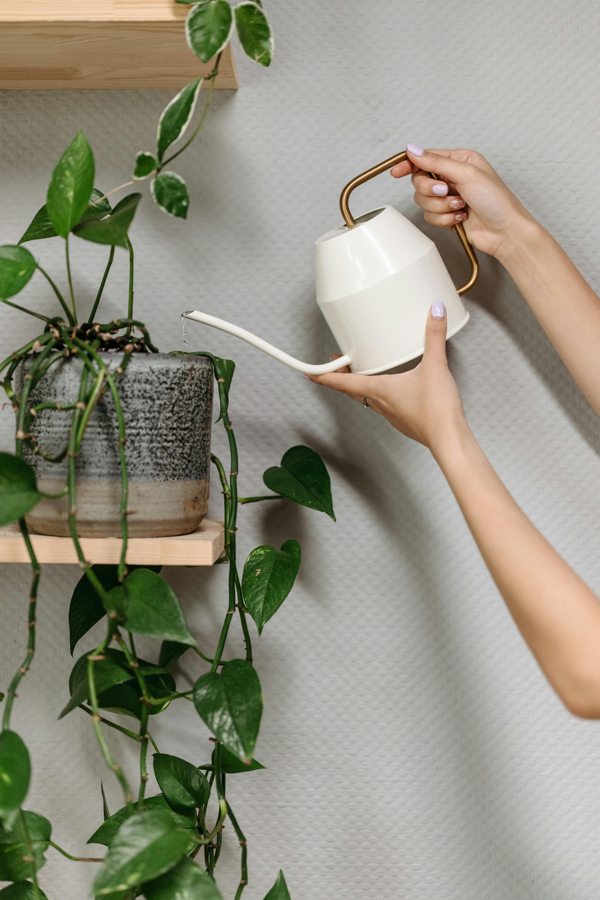

Hoya
Description
Commonly known as the Wax Plant, is a genus of tropical plants admired for their fragrant, waxy flowers and thick, glossy leaves. They are easy to care for and make great houseplants, often growing as trailing vines or climbers when given proper support.
Hoya
Care
They grow slowly, so you won't need to worry about constant maintenance. If you notice the leaves becoming floppy or discolored, it may be a sign of overwatering.
- Light: Prefer bright, indirect light
- Watering: Water when the soil is dry to the touch
- Humidity: Enjoys higher humidity but can adapt to average indoor humidity
Well-draining soil, like cactus or succulent mix, is ideal. Additionally, feed with a balanced liquid fertilizer during the growing season (spring and summer), but reduce fertilization in the fall and winter.
Fun Fact
Hoyas are known for their ability to bloom year after year, especially if they’re given the right conditions.
More Research
Some articles to help further your independent research: